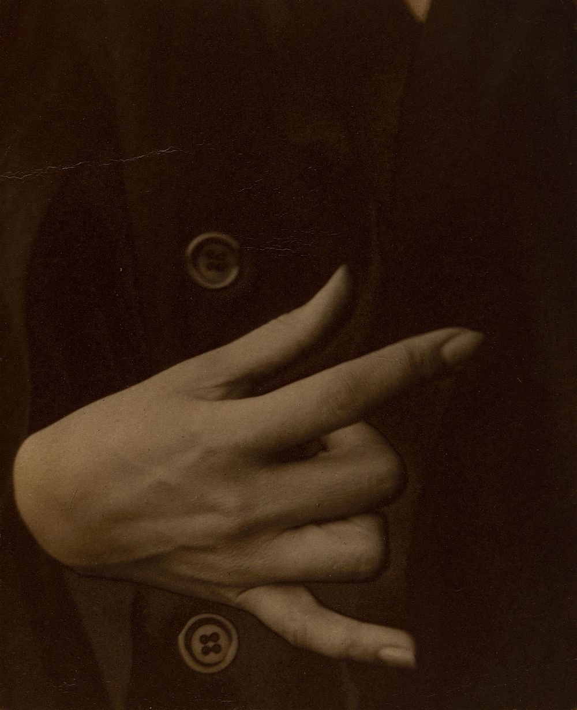

hands
yet again
the moment's been gifted away
i remained endowed
to the lack in your hands
with whatever's left in mine.
in that abscence
has been planted a kiss
sickeningly sweet.
patters of metal and wood
now pre-occupy not rooms
but interstitial corners
between wrinkles
and become
a brother-tongue of mine.
a blond face on a blond boy
with nothing in his palms
but a closed fist.
